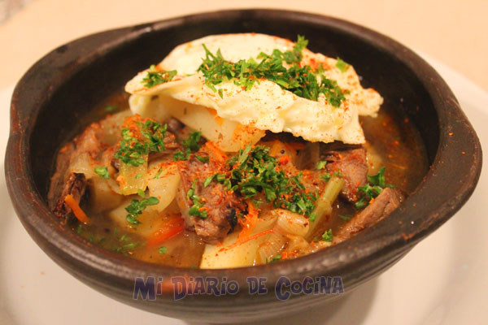

Ajiaco Chileno
23/11/2018, por Carolina 
Aprovechando lo que deja el ambiente dieciochero, es que encontré ideal hacer esta receta con los restos de asado que quedaron. En estas fechas los chilenos se entusiasman cocinando, pero entre empanadas, pebre, choripanes y cuando toca el turno a la carne al menos a mi ya poca ganas o espacio queda. Esta receta es tan tradicional en Chile, es un exquisita sopa que si bien si no se cuenta con carne asada, se puede preparar un poco de carne previamente aliñándola y asándola en el horno
¡Disfrútenlo!
INGREDIENTES:
- 300 grs de carne asada, puede ser más
- 2 cucharadas de aceite
- 1 cebolla grande o 2 cebollas medianas
- 4 papas medianas
- 2 ajos
- 1 trozo pequeño de pimentón rojo
- ½ cucharadita de orégano
- Sal, pimienta a gusto
- Merkén
- Ají color
- 1 huevo por persona
- 2 cucharadas de perejil picado
- 1 litro de caldo de carne
Preparación
- Cortamos la carne en tiras y las papas a lo largo (en juliana). Reservar.
- Se corta la cebolla en pluma y se coloca en una olla con el aceite, se fríe por unos minutos, luego agregamos el ajo y el pimentón. Enseguida añadir la carne y los aliños (sal, pimienta, ají color, orégano, merkén). Luego se echan las papas y finalmente agrega el caldo de carne o agua.
- Se cocina por unos 20 minutos.
- Mientras tanto podemos pochar el huevo o simplemente cocinarlo por 10 minutos en agua hervida.
- Se sirve en un plato hondo y se puede optar por colocar el huevo al principio o al final. Luego el caldo y resto de ingredientes. Se coloca encima perejil picado y merkén (optativo).
José: Gracias por el post
Monica: Excelente!
Aline: Gracias!